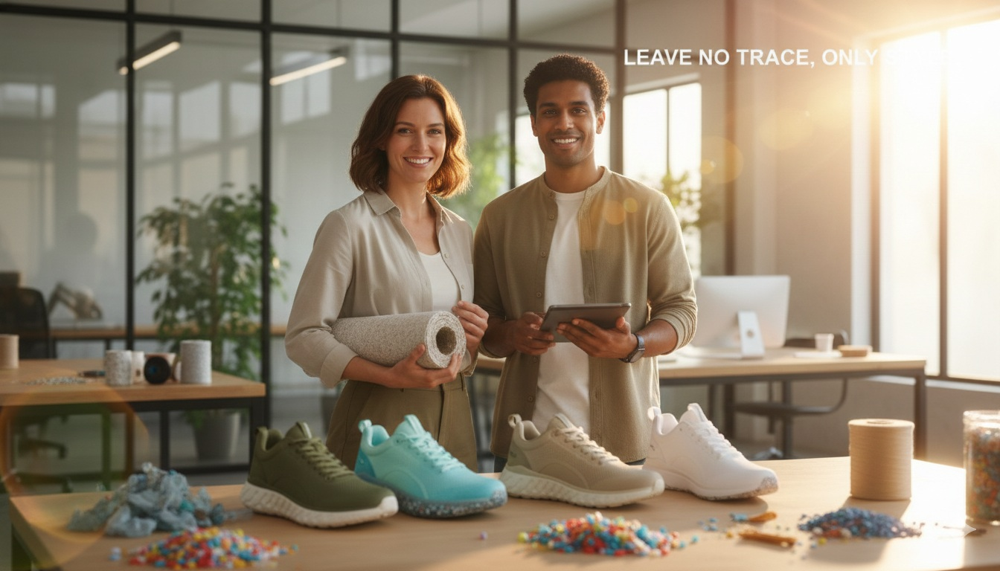

About EcoStrideOur Journey: How the Business Was FoundedEcoStride was born out of a simple but powerful observation during a coastal cleanup in 2022. Our founders witnessed the devastating impact of plastic pollution on marine life and realized that the footwear industry was a major contributor to global waste. We decided to stop being part of the problem and start being part of the solution by transforming ocean trash into high-performance gear. Meet the FoundersThe business was established by Alex Rivers and Jordan Green. Alex brings over 10 years of experience in sustainable materials research, while Jordan specializes in ergonomic athletic design. What We SellAt EcoStride, we specialize in eco-friendly sneakers designed for performance and style. Our products are crafted from 100% recycled ocean plastics, reclaimed rubber, and organic cotton. Terms and ConditionsBy shopping with EcoStride, you agree to our commitment to sustainability. We offer carbon-neutral shipping on all orders and a 30-day recycling guarantee. |
|
|